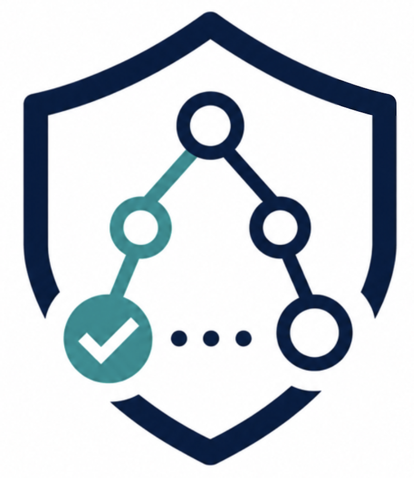

Safe
<T>Automaton-theoretic Runtime Monitoring of Blackbox Systems
Dissertation research by [Karuna Grewal](https://www.cs.cornell.edu/~kgrewal/)
Collaborators: [Brighten Godfrey](https://pbg.cs.illinois.edu/), [Justin Hsu](https://www.justinhsu.net/)
# Overview
`Safe<T>` is an automaton-theoretic runtime-monitoring framework for
enforcing safety and security properties in systems without access to the source code.
Safety-critical systems in domains like healthcare, finance, and autonomous systems
are increasingly built from black-box components whose source code is unavailable for
inspection. To certify safe and secure inter-component interactions in such systems,
security and compliance teams must enforce policies over sequential and nested call/return
patterns in the inter-component interactions, along with the data values exchanged
between the components. Furthermore, the blackbox setting necessitates decoupling
the policy enforcement mechanism from the system implementation. To this end, we design
an expressive specification language for control and data-aware policies and an automaton-based
enforcement mechanism. Our technique is blackbox and non-invasive, i.e., it does not require
any access or changes to the system’s code. To realize our method, we have built a distributed
runtime monitor on top of an emerging network infrastructure layer that can control inter-component
communication during deployment.
_`Safe<T>` carries a pun in its name: read aloud, it is *safety*, while written as a generic type,
it suggests a family of monitors parametrized by T=automaton. Instantiations such as `SafeTree`, `SafeNom`, `SafePar` are monitors
specialized for different kind of properties, but at their core resides a safety automaton._
!!! note
_`Safe<T>` is the project out of Karuna Grewal's dissertation research._ [(News)](https://siebelschool.illinois.edu/news/nsf-microservices)
# Research Progress
The research on `Safe<T>` sits at the intersection of automata theory, runtime monitoring,
and network, making distinct contributions to each. It has contributed: (a) new automata models
that are monitorable, (b) scalable distributed monitor implementation, (c) a repurposed network
layer for monitoring safety and security properties. These advancements have vast societal impact
as users require hard safety guarantees about their sensitive data. `Safe<T>` gives clients,
practitioners, and regulators a principled way to enforce rigorous safety and trust around software.
Users do not have to rewrite their software, easing my framework’s adoption and enabling widespread
use across industry. More details can be found in the following papers:
**Expressive Policies for Microservice Networks**